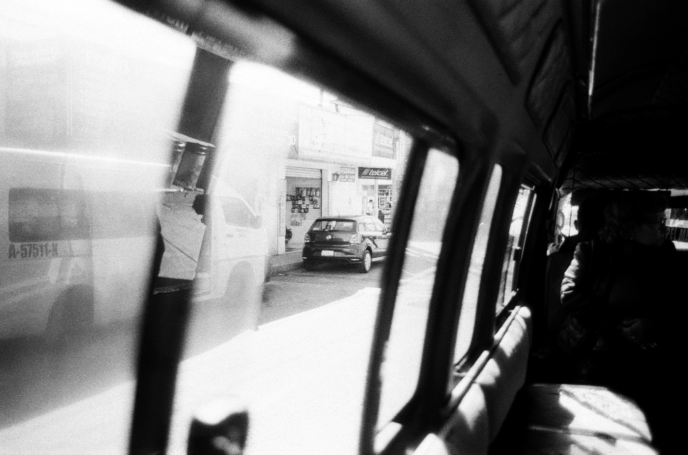

Souvenir
La acutal Galeria "Souvenir" del fotografo fantasma muestra un retrato sutil y nostalgico de la cotidianidad de la vida, dejando en claro que lo que vemons en un fotografia no es una calca de la realidad, sino un a interpretacion de la misma realidad, atreviendose a mostrar escenarios reales y cotidianos con los que todos convivimos día con día, pero desde los ojos de un fotografo que solo interpreta su propia realidad.
